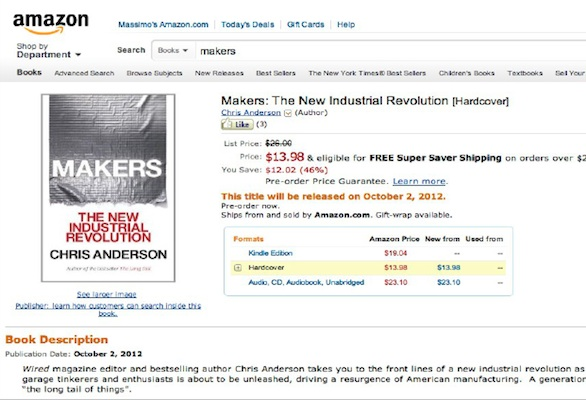
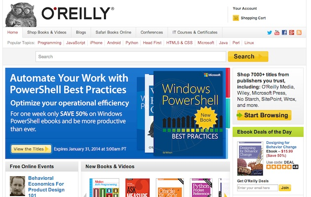
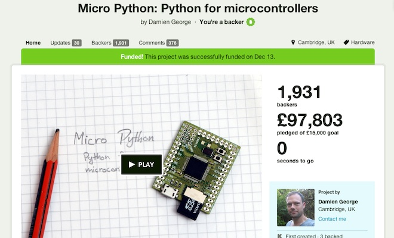

Open Project Management
30 January 2014
1. Media ecosystem
2. Platforms
3. Money and economy
4. Business Model (Canvas)
1. Media ecosystem
Wired

Source: http://wired.com/
DIYDrones from Chris Anderson (Wired)
Source: http://diydrones.com/
DIYDrones from Chris Anderson (Wired)

DIYDrones: a real factory

Source: http://diydrones.com/profiles/blogs/tour-of-the-new-3d-robotics-factory
"Makers" from Chris Anderson (Wired)
Source: Anderson, Chris. Makers: The New Industrial Revolution. Crown Business, 2012.
O'Reilly Media
Source: http://oreilly.com/
Make Magazine

Source: http://makezine.com//
Make Magazine
Source: http://makezine.com/
Maker Media
Source: http://makermedia.com/
Make: Blog

Source: http://makezine.com/blog/
Make: Store

Source: http://www.makershed.com/
Make: Faires
Source: http://makerfaire.com/map/
Make: Faires. Next edition in Europe

Source: http://www.makerfairerome.eu/news/torna-maker-faire-romedal-28-settembre-al-5-ottobre-2014/
Make: TV

Source: http://archive.makezine.com/tv/
Make: Controller Kit

Source: http://makezine.com/2009/09/10/review-make-controller-kit-v2/
Make: Craft:

Source: http://makezine.com/craftzine/
Makerbot: TV
Source: http://blip.tv/makerbot
Makerbot: Thingiverse
Ultimaker: YouMagine

Source: https://www.youmagine.com/
2. Platforms
Simon "The age of the platform"

Source: Source: Simon, Phil. The Age of the Platform: How Amazon, Apple, Facebook, and Google Have Redefined Business. Motion Publishing, 2011.
A platform
= an extremely valuable and powerful ecosystem that quickly and easily scales, morphs, and incorporates new features (called planks), users, customers, vendors, and partners.
The most vibrant platforms embrace third-party collaboration. The companies behind these platforms seek to foster symbiotic and mutually benefcial relationships with users, customers, partners, vendors, developers, and the community at large. At their core, platforms today are primarily about consumer utility and communications.
Source: Simon, Phil. The Age of the Platform: How Amazon, Apple, Facebook, and Google Have Redefined Business. Motion Publishing, 2011.
A platform
Source: Source: Simon, Phil. The Age of the Platform: How Amazon, Apple, Facebook, and Google Have Redefined Business. Motion Publishing, 2011.
Etsy: A DIY/Craft marketplace

Source: https://www.etsy.com/
Etsy: A platform for DIY

Etsy: A platform for DIY
Blomming: Another platform for DIY

Source: http://www.blomming.com/
Ponoko: A Fabbing platform
Source: http://www.ponoko.com/
Ponoko: A distributed platform
Ponoko: A platform with API
Shapeways: A 3D Printing Platform

Source: http://www.shapeways.com/
Shapeways: A 3D Printing Platform

Shapeways: A 3D Printing Platform

Source: http://www.shapeways.com/blog/archives/1442-Funding-the-Rise-of-Creative-Commerce.html
Shapeways: A 3D Printing Platform
Source: http://www.youtube.com/watch?feature=player_embedded&v=qJuTM0Y7U1k
i.materialise: A 3D Printing Platform

Source: http://i.materialise.com/
Sculpteo: A 3D Printing Platform

Source: http://www.sculpteo.com/en/
Inventables: a store, not a Platform
Source: https://www.inventables.com/
Adafruit: a store, not a Platform

Source: http://adafruit.com/
Adafruit: TV
Adafruit: Video Interview
Sparkfun: a store, not a Platform

Source: https://www.sparkfun.com/
Sparkfun: TV

Sparkfun: How they create value
Physical Platforms: Arduino
Source: http://arduino.cc/
Physical Platforms: Arduino

Physical Platforms: Arduino: Spark Core

Source: https://www.spark.io/
Physical Platforms: Raspberry Pi

Physical Platforms: Micro Python
Source: https://www.kickstarter.com/projects/214379695/micro-python-python-for-microcontrollers
Funding Platforms: Kickstarter

Source: https://www.kickstarter.com/
Kickstarter: Projects 2009-11
Source: https://www.kickstarter.com/blog/happy-birthday-kickstarter
Kickstarter: Success 2009-11

Source: https://www.kickstarter.com/blog/happy-birthday-kickstarter
Kickstarter: Kind of projects 2009-11

Source: https://www.kickstarter.com/blog/happy-birthday-kickstarter
Kickstarter: some sort of API
Source: http://syntaxi.net/2013/03/24/let-s-explore-kickstarter-s-api/
KickTraq: built with some sort of API
Source: http://www.kicktraq.com/projects/sparkdevices/spark-core-wi-fi-for-everything-arduino-compatible/
Kickstarter: rather a medium?

Source: http://www.fastcompany.com/1843007/kickstarter-crowdfunding-platform-or-reality-show
Kickstarter: lessons learned #01
- Design for Simplicity: reduce the functionalities / components
- Design for scale: identify your possible supply chain and plan how to scale the production
- Treat it like a job: it requires full time energy, and probably also a team work
- Befriend fellow hackers: develop the project in hackerspaces or fablabs
- Leverage your backers: use them not just for collecting money!
Source: http://www.wired.com/design/2012/08/how-kickstarter-project-hexy-got-made/
Kickstarter: lessons learned #02
- Set a spot-on funding goal — not too big, not too small: set your Kickstarter goal near $10,000: 38% of projects met their goals
- Don’t take too long to raise your money: The average Kickstarter campaign lasts for 30 days, with 35% of success
- Produce a slick video to get attention:The nearly foolproof way to raise money on Kickstarter is to get the attention of the crowdfunding site’s staff (89% success)
- Make at least 1,000 Facebook friends: Founders with 1,000 Facebook friends or more can have a success up to 40%
Funding Platforms: Indiegogo

Source: http://www.indiegogo.com/
Funding Platforms for Open Projects: Goteo
Source: http://goteo.org/?lang=en
Funding Platforms for Open Projects: Goteo
Source: https://github.com/Goteo/Goteo
Funding Platforms for Local Projects: SmallKnot
Source: http://www.smallknot.com/
Funding Platforms for Local Projects: Brickstarter
Platforms for coding: Sourceforge, for the organization
Source: http://sourceforge.net/
Platforms for coding: GitHub, for social network
Source: https://github.com/
Platforms for coding: GitHub, for social network
Source: http://developer.github.com/v3/
Platforms for coding: Bitbucket (like GitHub)

Source: http://bitbucket.org/
Platforms for coding: Bitbucket (like GitHub)

Platforms for coding: GitTip for GitHub,Bitbucket,Twitter

Source: https://www.gittip.com/
Lunch time! Questions?
See you at 13:00
2. Lead users, Open Innovation and Open Source
von Hippel: "The sources of innovation"

Source: Von Hippel, E. (1988). The sources of innovation. New York: Oxford University Press. Retrieved from http://web.mit.edu/evhippel/www/sources.htm
Thank you!
Massimo Menichinelli / info@openp2pdesign.org / @openp2pdesign

This work is licensed under a Creative Commons Attribution 3.0 Unported License.
Massimo Menichinelli - 2013
openp2pdesign.org